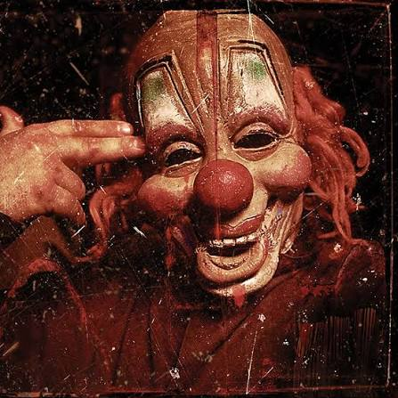

Shawn "Clown" Crahan (#6) — Percussão e backing vocals (1995–presente):Membro fundador e principal arquiteto visual e conceitual do grupo. Começou na bateria antes de assumir a percussão característica com tambores de metal e ajudar a moldar a estética da banda.

Mick Thomson (#7) — Guitarra (1996–presente): Entrou logo após o início do projeto, trazendo riffs pesados e uma presença imponente com sua máscara metálica de expressão fechada.
Corey Taylor (#8) — Vocais principais (1997–presente):Recrutado após Mate. Feed. Kill. Repeat. (1996), assumiu o posto de frontman e se tornou a voz mais reconhecível do grupo, alternando guturais, vocais rasgados e melodias
Jim Root (#4) — Guitarra (1999–presente):Chegou perto do fim das gravações do álbum de estreia (1999) no lugar de Josh Brainard e formou uma dupla de guitarras central para o som moderno da banda
Alessandro "V-Man" Venturella — Baixo e teclados (turnê em 2014; oficial desde 2015):Assumiu o baixo após a morte de Paul Gray e a passagem de Donnie Steele como músico de apoio, participando dos discos desde .5: The Gray Chapter (2014).
Michael "Tortilla Man" Pfaff — Percussão, backing vocals e teclados (turnê desde 2019; oficial desde 2022):Entrou após a saída de Chris Fehn, conquistando o público com sua energia de palco e o apelido dado pelos fãs por conta de sua máscara
Eloy Casagrande — Bateria (2024–presente)O baterista brasileiro assumiu o posto após a saída de Jay Weinberg, trazendo potência, técnica e precisão para a nova fase da banda.
Sampler / tecladista / percussão de apoio (desde 2023):Após a saída de Craig Jones, a banda passou a contar com um músico de samples e teclados mantido de forma discreta/anônima na formação (apontado por relatos como Jeff Karnowski).
Paul Gray (#2) — Baixo e backing vocals (1995–2010):Co-fundador e um dos principais compositores do Slipknot. Morreu em maio de 2010; sua perda abalou profundamente o grupo e inspirou o álbum .5: The Gray Chapter (2014).
Joey Jordison (#1) — Bateria (1995–2013):Fundador e peça-chave na velocidade, agressividade e identidade rítmica da banda nos primeiros discos. Deixou o grupo no fim de 2013 em meio a problemas de saúde (mais tarde diagnosticados como mielite transversa) e morreu em julho de 2021.
Anders Colsefni — Vocais principais e percussão (1995–1997):Vocalista original na fase Mate. Feed. Kill. Repeat. (1996). Com a chegada de Corey Taylor e a mudança de foco vocal, acabou deixando a banda.
Josh "Gnar" Brainard (#4) — Guitarra e backing vocals (1995–1998/1999):Guitarrista das primeiras formações, gravou Mate. Feed. Kill. Repeat. e participou das sessões iniciais do disco de estreia antes de sair e ser substituído por Jim Root
Donnie Steele — Guitarra (1995–1996) e baixo (turnê/sessão, 2011–2014):Integrou a fase inicial da banda e voltou anos depois para tocar baixo em estúdio e turnês em homenagem a Paul Gray, antes de sair durante as gravações de .5: The Gray Chapter.
Craig "133" Jones (#5) — Samples e teclados (1996–2023):Conhecido pelo silêncio absoluto e pela máscara de capacete com espinhos, foi responsável por camadas eletrônicas e samples por quase três décadas até deixar o grupo em 2023.
Greg "Cuddles" Welts (#3) — Percussão (1997–1998):Teve passagem curta como um dos percussionistas da fase pré-estreia antes de deixar a banda em 1998.
Brandon Darner — Percussão (1998):Atuou brevemente na percussão em 1998 após a saída de Welts, logo antes da consolidação da formação clássica com Chris Fehn.
Chris Fehn (#3) — Percussão e backing vocals (1998–2019):Participou de toda a era de ouro com sua icônica máscara de nariz alongado e performances de palco, deixando a banda em 2019 após uma disputa judicial envolvendo questões financeiras e de negócios do grupo.
Jay Weinberg — Bateria (2014–2023):Assumiu a bateria após a saída de Joey Jordison e gravou álbuns como .5: The Gray Chapter (2014), We Are Not Your Kind (2019) e The End, So Far (2022) antes de ser desligado no fim de 2023.
Sid Wilson (#0) — DJ e teclados (1998–2026):Conhecido pela energia caótica no palco e por suas várias máscaras de gás, esteve na banda desde 1998 até sua saída confirmada em agosto de 2026.